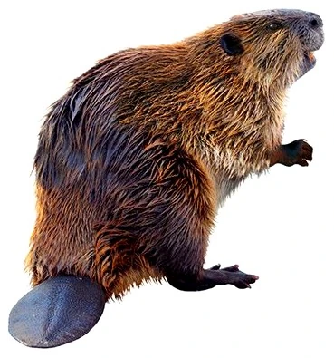

EL MUNDO DE LOS CASTORES
ORIGEN
Los castores tienen su origen en la familia Castoridae, un grupo de roedores que apareció hace unos 40 millones de años y que evolucionó desde formas terrestres hasta convertirse en los maestros del agua que conocemos hoy. Estos roedores semiacuáticos robustos se distinguen por un pelaje impermeable extremadamente denso que los protege de las bajas temperaturas y una cola ancha y escamosa que utilizan como timón al nadar y como apoyo en tierra. Su rasgo biológico más impresionante son sus poderosos dientes incisivos reforzados con hierro, los cuales poseen un característico color naranja y nunca dejan de crecer, una adaptación evolutiva obligatoria para poder talar árboles con eficiencia. Al ser herbívoros estrictos que se alimentan de corteza, hojas y vegetación acuática, utilizan la madera no solo como sustento, sino como material de construcción primordial para levantar diques y madrigueras en ríos y lagos. Estas estructuras les permiten crear estanques profundos donde protegerse de los depredadores y almacenar alimento durante el invierno. Al vivir en grupos familiares organizados que defienden y marcan su territorio, los castores actúan como verdaderos ingenieros de sus ecosistemas, modificando el paisaje de manera tan profunda que crean nuevos humedales, limpian el agua y fomentan la biodiversidad, estableciéndose como una de las especies más influyentes en la historia natural de nuestro planeta.

LOS CASTORES EN LA PENÍNSULA IBÉRICA
El castor europeo (Castor fiber) ha protagonizado una de las recuperaciones de fauna más singulares de la península ibérica. Tras su extinción en el siglo XIX debido a la caza intensiva, la especie regresó de forma polémica en 2003 tras una liberación no autorizada en la cuenca del Ebro. Aunque inicialmente fue objeto de planes de erradicación, para el año 2026 su estatus ha cambiado radicalmente, consolidándose como una especie protegida bajo el Listado de Especies Silvestres en Régimen de Protección Especial del Gobierno de España. En la actualidad, sus poblaciones se han expandido con éxito por Navarra, La Rioja y Aragón, alcanzando incluso provincias como Soria y puntos de la cuenca del Tajo. Este roedor actúa como un "ingeniero de ecosistemas", ya que sus diques crean humedales que funcionan como refugios de biodiversidad, filtran sedimentos y mejoran la calidad del agua. En el contexto climático de 2026, su capacidad para retener agua y mitigar el impacto de las sequías y las inundaciones lo convierte en una pieza clave para la restauración de los ríos ibéricos, equilibrando los retos de la gestión agrícola con los beneficios ambientales de su presencia.
CARACTERÍSTICAS
roedores semiacuáticos robustos, conocidos por su pelaje impermeable, cola ancha y escamosa, y poderosos dientes incisivos que nunca dejan de crecer, esenciales para talar árboles y construir diques y madrigueras en ríos y lagos. Son herbívoros, comen corteza, hojas y vegetación acuática, viven en grupos familiares y marcan territorio, siendo "ingenieros" clave de sus ecosistemas por su capacidad para modificar el paisaje.
TIPOS DE CASTORES
-
 Castor norteamericano
Castor norteamericano
Castor canadensis -
 Castor euroasiático
Castor euroasiático
Castor fiber -

Dorum
Ultricies congue